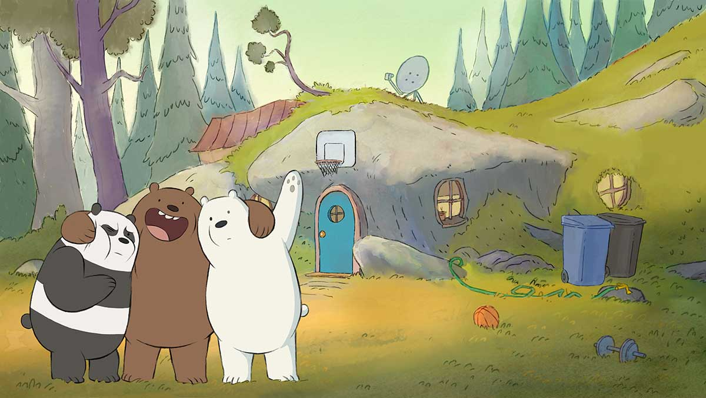
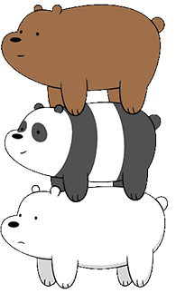
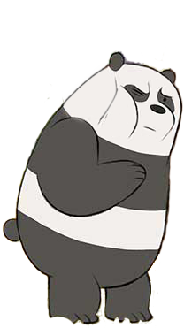
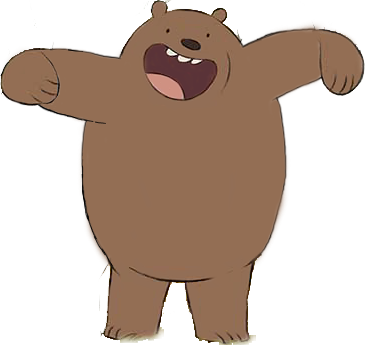
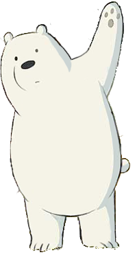

판다
곰 삼형제 중 둘째인 판다는 세 형제 중 가장 허약하고 다양한 알레르기를 가지고 있어요. 그리고 SNS 중독자라서 스마트폰과 노트북을 자주 보게 됐는데 때문에 시력이 나빠 렌즈가 꼭 필요해요.

위 베어 베어스에서 그리즐리, 판다, 아이스 베어 삼형제의 일상을 구경해요~!

복잡한 도시에서 사람들과 어울리기 위해 애쓰는 곰 삼형제의 배꼽 잡는 좌충우돌 도시 적응 대작전!
형제애로 똘똘 뭉친 곰 브라더스에게 두려울 것은 없다!
친구를 사귈 수만 있다면 언제 어디서든 새로운 모험 속으로 뛰어들 준비가 되어 있으니까!


그리즐리
곰 삼형제 중 첫째인 그리즐리는 리더로써 동생들을 사랑하고 매우 아끼는 든든한 형이에요. 가끔씩 사소한 일로 다투는 때가 있어도 먼저 사과하고 화해를 이끌어내는 모습을 보입니다.
곰 삼형제 중 첫째인 그리즐리는 리더로써 동생들을 사랑하고 매우 아끼는 든든한 형이에요. 가끔씩 사소한 일로 다투는 때가 있어도 먼저 사과하고 화해를 이끌어내는 모습을 보입니다.

아이스 베어
막내인 아이스 베어는 가장 말수가 적어서 존재감이 없어 보이지만 의외로 뭐든 잘하는 재주꾼으로 북극곰답게 차가운 것을 좋아해서 평소에 냉장고에서 지내요. 카페인과 오이에는 취약하답니다.
막내인 아이스 베어는 가장 말수가 적어서 존재감이 없어 보이지만 의외로 뭐든 잘하는 재주꾼으로 북극곰답게 차가운 것을 좋아해서 평소에 냉장고에서 지내요. 카페인과 오이에는 취약하답니다.